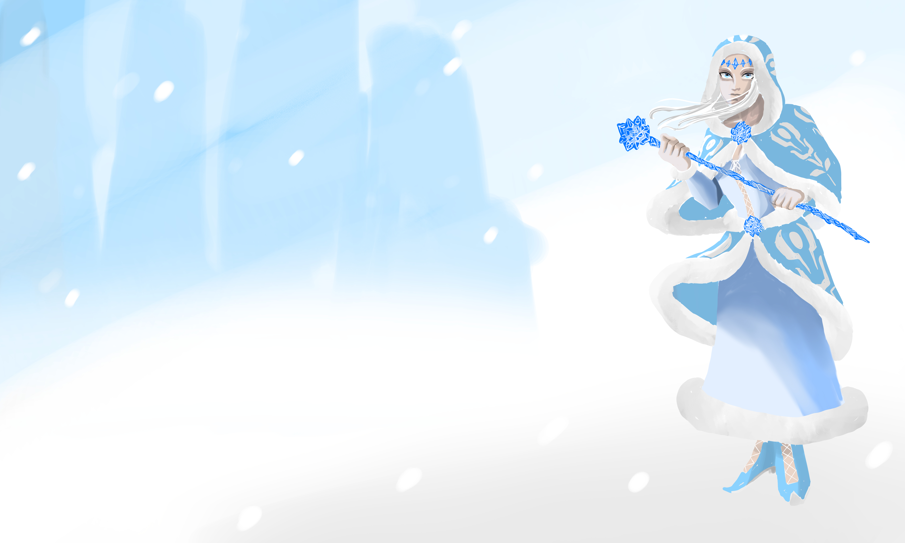

Bio: Isendel is a young mage from the frozen wastelands of Majmar. As a child, she was a reserved and timid girl, always afraid of asking questions despite her burning curiosity. One day, she discovers a small fragment of red crystal encased in ice. But another nomad boy, who was older, took it from her by force. As he played with the red crystal, it suddenly glowed like hot embers and burst into flames. It burnt the boy who screamed in pain. But Isendel tried to help him. That is how she manifested her powers.. Snow fell from the skies and the boy’s hand became encased in a thick layer of ice which doused the flames. But the ice would not go away no matter how hard the boy tried to get rid of it. Isendel and her friend were afraid of telling anyone about what happened in fear of punishment. But they both knew of the secret of the red crystal. The mere burst of flames that came from it was terrifying. Destructive. The nomad boy decided to never come back to the tribe despite Isendel’s plea. He couldn't with his deformed arm.
Isendel hopes that no more incidents like that would happen. Not to those she held close. She travels Majmar in search of red crystals, unbeknownst to all, but also in the hope of finding her long lost friend.
Isendel sidles down the marbled hallways of the Crystalline Order, holding her ice-blue staff tightly. Each step leaves a trail of glaze behind her, which quickly melted with the temperature inside the institute. She was feeling hot, so she used her magic to cool down the corridor. The huge, tall doors at the end now looked like they were made of a thick layer of ice. As she touches the tip of the handle, the doors open on their own and she steps in a dimly-lit chamber.
A biting cold pierces the flesh of Isendel. She was not in the dimly-lit chamber, but a place colder than any location in Majmar. She does not remember being here as the snowstorm rages in the white expanse, preventing her from advancing with ease. She thinks about retreating but decides not to, mustering up the courage that the nomads of her tribe have taught her in order to survive the coldest winters of Majmar.
Isendel starts the climb as she reaches a steep slope, the howling gales pushing against her. She takes a small step at a time leaving small trails in the snow for what seemed like hours. She had to find out what was at the peak of the mountain. When any ordinary human would have perished, she survived, mostly due to her high resistance to cold temperatures and her innate ice magic. Finally, she takes the last step and reaches her destination, out of breath. But what she finds surprises her. Glade, the boy she used to play with as a child, now an adult, stood before her. He was facing a gigantic crystal encased in a thick layer of ice.
“Glade?” says Isendel quietly.
The young man turns around slightly. Isendel looks at his right arm. It looked like it was made of thick blue ice, with sharp icy claws.
“Isendel…” says Glade.
Isendel still remembered him. He used to be an adventurous boy who had inhumane strength. But now he looked different. He was no longer the joyful, playful boy she knew. Glade clenched his clawed fist getting ready to attack. Isendel takes a few steps backwards out of fright.
“Look at what you’ve done to me…” says Glade.
Glade’s ice claws grow longer and sharper. He launches himself at Isendel. She tries to run but falls in the snow. Just as Glade is about to maul her, she tries to protect herself. As she places a hand in front of her, a blast of ice freezes Glade in place. He tries to free himself but cannot. His body was now encased in ice.
“I’m sorry…” says Isendel. “I only wanted to save you back then.”
Glade became a sculpture of ice as the frost curse took hold of his entire body. Isendel is saddened and comes closer to him. She tries to touch his face in an attempt to undo the curse.
“Do not touch me,” says a voice.
The snowy landscape disappears and a dimly-lit chamber appears in its place. A cloaked man sits at a desk in the middle of the room. Isendel steps back a little.
“How does it feel exposing your mind?” says the hooded man.
Isendel pauses and takes a deep breath.
“I feel that I need to save him. I wish to undo the curse I wrought upon him,” says Isendel.
“Welcome to the Crystalline Order,” says the Judge with a smile. “We will find a way. Your powers cannot harm anyone permanently here.”
“Really?” says Isendel.
The Judge nods.
“You shall prove your worth on the Fields of Eternity,” he says.
The doors swung open behind Isendel as light pours into the room. She turns around slowly to face it. She was now a Chosen of the Crystalline Order.